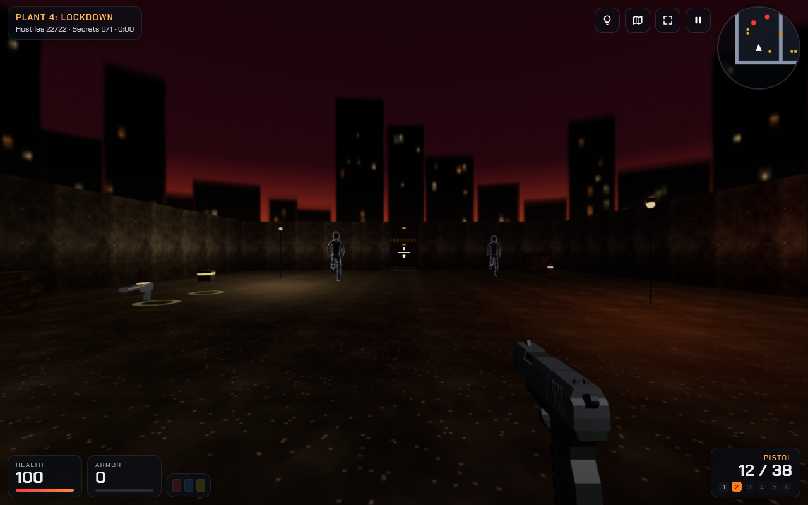
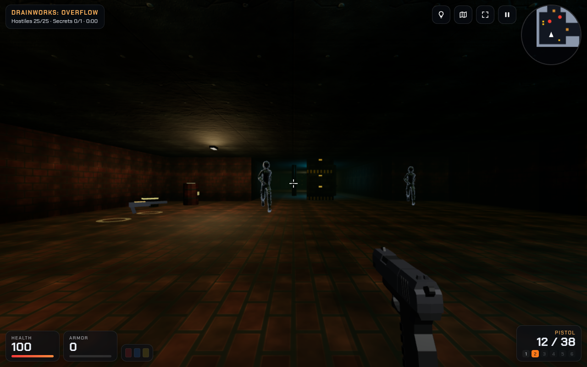
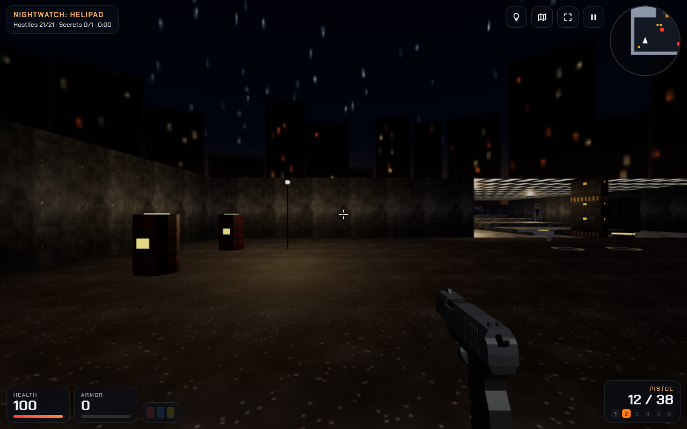
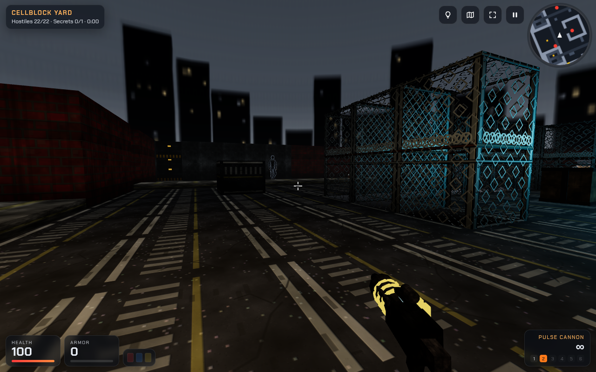
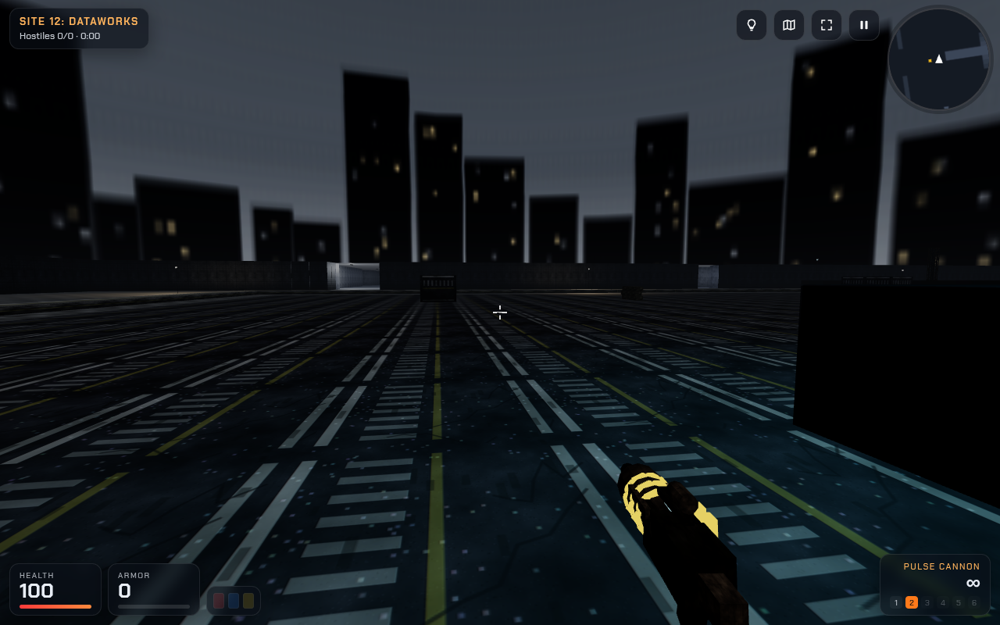

Five maps, including a 128×128 multiplayer compound. The first four are escape-pad trials; Site 12 is a huge factory and data-center arena with eight spawns. Tap Play to load a map in RetroEngine — works on a phone.
← Back to the editor · Tutorial



